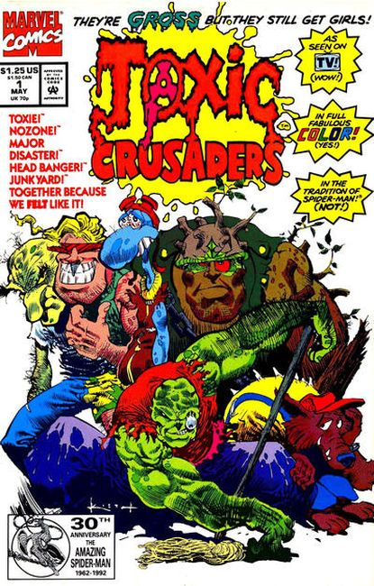

Toxic Crusaders is an animated series based on The Toxic Avenger films.
It features Toxie, the lead character of the films leading a group of misfit superheroes who combat pollution. This followed a trend of environmentally considerate cartoons and comics of the time, including Captain Planet and the Planeteers, Swamp Thing, and the Teenage Mutant Ninja Turtles Adventures.
As this incarnation was aimed at children, Toxic Crusaders is considerably tamer than the edgy films it was based on (although it nevertheless contain many adult-oriented jokes that would go over most children's heads). Thirteen episodes were produced and aired, with at least a few episodes airing as a "trial run" in Summer 1990 followed by the official debut on January 21, 1991. It aired on YTV 1991 to 1997 in Canada. The US cable network G4 aired the first two episodes on July 25, 2009.

Series: 8 issues 1992
Publisher: Marvel
Cover by Sam Kieth. The Making of Toxie, script by Simon Furman, art by Derek Yaniger and Marie Severin.
The origin story of how the Toxic Avengers came to exist. "The Toxic Avenger" film spawned this tongue-in-cheek cartoon series with an environmental message about mutated crime fighters who battle the menacing Dr. Killemoff.